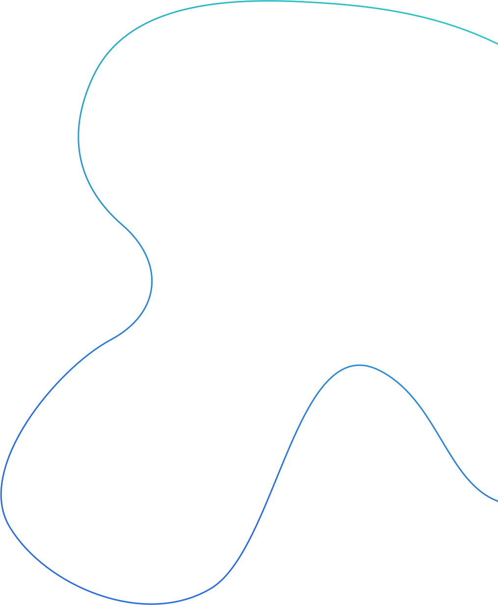

新闻中心>新闻动态
2018年第四届金陵肿瘤学论坛：聚焦肿瘤治疗新进展
2018年11月12日
分享到:

传统的肿瘤治疗手段主要以外科手术、 放疗及化疗为主, 而近年来蓬勃发展的靶向治疗和免疫治疗的飞速发展又给肿瘤治疗带来新突破，引领肿瘤治疗进入精准医疗时代。11 月 10日，2018年第四届金陵肿瘤学论坛在南京召开，来自全国各地的400余名专家学者共同探讨了精准医疗时代下肿瘤的治疗策略。
本届金陵肿瘤学论坛由中国临床肿瘤学会（CSCO）、北京希思科临床肿瘤学研究基金会主办，绿叶生命科学集团合办，《临床肿瘤学杂志》社协办。CSCO中国临床肿瘤学会副理事长、解放军八一医院副院长秦叔逵教授、哈尔滨血液病肿瘤研究所所长马军教授、山东省肿瘤医院院长于金明教授担任本次大会主席。秦叔逵教授在会上表示：“金陵肿瘤学论坛是一个注重实用价值和指导意义的专业学术平台，迄今为止已举办了四届。随着这几年的发展，论坛的规模和学术影响力也在持续提升。希望借由这个平台，与业界同仁共同探讨前沿的技术与治疗方法，交流与汇总临床经验。医务工作者学术水平的进步，最终将使广大患者获益。”
CSCO中国临床肿瘤学会副理事长、解放军八一医院副院长秦叔逵教授致辞
肿瘤治疗策略上，化疗仍然发挥重要作用
与会专家表示：让肿瘤患者活得更长、更好是肿瘤治疗的关键。随着分子分型等肿瘤基础生物学的进展，靶向与免疫治疗成为当下热点。然而，在癌症治疗的各种手段中，化疗仍然发挥着重要作用，如何与这些治疗方式进行联合，发挥理想疗效是目前临床研究的重点。
一直以来，化疗药物的不良反应都是医生和患者关注的重点，一些严重的不良反应是限制化疗药物剂量或使用的原因。随着化疗药物的不断改进，其不良反应也已得到明显改善，令化疗不再像以前那么可怕。以紫杉醇脂质体为例（力扑素）：相对于传统的紫杉醇，力扑素采用脂质体作为载体，在肿瘤组织和淋巴结内的浓度更高，作用时间更长，在提高疗效的同时降低了不良反应的发生率。
助力肿瘤治疗发展， 使更多患者获益
今年已是绿叶生命科学集团合办金陵肿瘤学论坛的第四个年头。绿叶生命科学集团执行董事、绿叶制药集团总裁杨荣兵先生在会上表示：“很高兴看到，金陵肿瘤学论坛已成为业界较有影响力的一个学术品牌。我们希望持续开展更多的学术交流，与各位肿瘤领域专家学者一起，助力肿瘤临床治疗水平的不断进步；也希望能为患者提供更多创新药物，帮助他们生活的很好、更长久。”
绿叶生命科学集团执行董事、绿叶制药集团总裁杨荣兵致辞
力扑素是绿叶制药自主研发的创新药物，也是全球唯一上市的紫杉醇脂质体制剂。目前，围绕“注射用紫杉醇脂质体联合顺铂对比吉西他滨联合顺铂一线治疗晚期肺鳞癌”的多中心、随机、开放、平行对照临床研究已在积极进行中。为使更多有需要的患者获得及时、有效的治疗，绿叶制药联合北京康盟慈善基金会共同发起“助力前行—力扑素患者援助项目”，对确诊为非小细胞癌、乳腺癌、卵巢癌、宫颈癌等恶性肿瘤患者提供力扑素药物援助。此外，在提升药物可及性方面，绿叶制药进一步扩建产能，在南京药谷建设新的生产基地，预计2019年药谷新厂投产后，力扑素的年生产能力将达到450万瓶。
除了现有产品以外，绿叶制药亦在肿瘤治疗领域积极研发创新药物，包括用于下一代肿瘤免疫疗法的治疗型抗体、CAR-T疗法、IDO/TDO双靶点抑制剂、注射用醋酸戈舍瑞林缓释微球、贝伐珠单抗类似物等。目前，绿叶制药在肿瘤领域已有十多个创新制剂和创新药，分别在中国和海外处于不同临床阶段，希望通过这些创新药物造福全球更多患者。